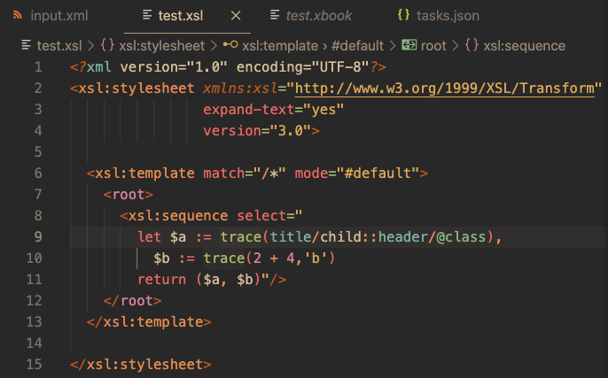

Settings
Visual Studio Code's settings let you tailor your working environment to fit requirements for specific languages or extensions, or to suit your own preferences.
A general guide to settings is provided by the Visual Studio Code documentation: User and Workspace Settings. The page you are reading now covers settings that are of particular interest from an XSLT or XPath development viewpoint.
Creating User and Workspace Settings
From the Command Palette (⇧⌘P) you can either invoke Preferences: Open User Settings
or Preferences: Open Workspace Settings.
Editor settings can also be applied in a language-specific way, for this, use the command Preferences: Configure Language Specific Settings.
Settings are either edited in the Settings form opened or in a JSON editor. Open the JSON editor by clicking the Open Settings (JSON) button
at the top right of the Editor Group (see screenshot). This opens the corresponding settings.json file directly.
XSLT Extension Specific Settings
Type xslt to show a short-list of settings specific to XSLT:
XSLT Packages
To allow XSLT package names to be resolved to file paths, package details should be added to the setting XSLT.resources.xsltPackages.
Sample XSLT package settings
"XSLT.resources.xsltPackages": [
{ "name": "example.com.package1",
"version": "2.0",
"path": "included1.xsl"
},
{ "name": "example.com.package2",
"version": "2.0",
"path": "features/included2.xsl"
},
]
XSLT Tasks
The Saxon XSLT-Java and XSLT-JS TaskProviders are enabled by default. These can be enabled or disabled using the following settings properties:
"XSLT.tasks.java.enabled": true
"XSLT.tasks.js.enabled": true
General Settings For XSLT
You can set your preferences for XSLT and XML editing so they don't affect coding in languages managed by other extensions:
"[xslt]": {
"editor.defaultFormatter": "deltaxml.xslt-xpath",
"editor.formatOnSaveMode": "modifications",
"editor.formatOnSave": true,
"editor.formatOnPaste": true,
"editor.formatOnType": true,
"editor.semanticHighlighting.enabled": true,
"editor.wordSeparators": "`~!@#%^&*()=+[{]}\\|;'\",:<>/?$",
"editor.insertSpaces": true,
"editor.tabSize": 4,
"outline.showArrays": true, // hides attributes in tree-view
},
"[xml]": {
"editor.defaultFormatter": "deltaxml.xslt-xpath",
"editor.formatOnSaveMode": "modifications",
"editor.formatOnSave": false,
"editor.formatOnPaste": true,
"editor.formatOnType": true,
"editor.wordSeparators": "`~!@#%^&*()=+[{]}\\|;'\",:<>/?$",
"editor.insertSpaces": true,
"editor.tabSize": 4,
"outline.showArrays": true, // hides attributes in tree-view
},
Code Formatting
The following settings directly affect code formatting in the XSLT/XPath extension:
"editor.defaultFormatter": "deltaxml.xslt-xpath",
"editor.formatOnSaveMode": "modifications",
"editor.formatOnSave": true,
"editor.formatOnPaste": true,
"editor.formatOnType": true,
The editor.formatOnSaveMode setting can be used to only format XSLT lines changed since the last commit on Git.
Syntax Highlighting
Syntax highlighting for XSLT and XPath is achieved using Visual Studio Code's Semantic Highlighting tokens alone. Almost all other languages in Visual Studio Code use a TextMate Grammar for tokens which may be supplemented by Semantic Highlighting.
To ensure XSLT and XPath is syntax highlighted in any Color Theme, you should explicitly enable Semantic Highlighting with the setting:
"editor.semanticHighlighting.enabled": true
A selection of popular dark color themes, enhanced for XSLT/XPath, are provided by the extension XSLT Dark Themes
X Gruvbox Material Dark theme:
Word Separators
The editor.wordSeparators setting affects how the full 'word' is selected when you double-click on a part of the word. The characters
listed are used as word separators. Typically in XSLT, you do not want characters like - and . treated as word
separators as these characters are valid within a QName like an attribute name or a variable name.
Emmet Snippets
Emmet Snippets provide a convenient shorthand for inserting a number of literal result elements and attributes into your XSLT in one go. For example, entering:
ul>li.item$*2
provides the following output:
<ul>
<li class="item1"></li>
<li class="item2"></li>
</ul>
To enable Emmet snippets for XSLT, add the following setting:
"emmet.includeLanguages": {
"xslt": "xml"
},